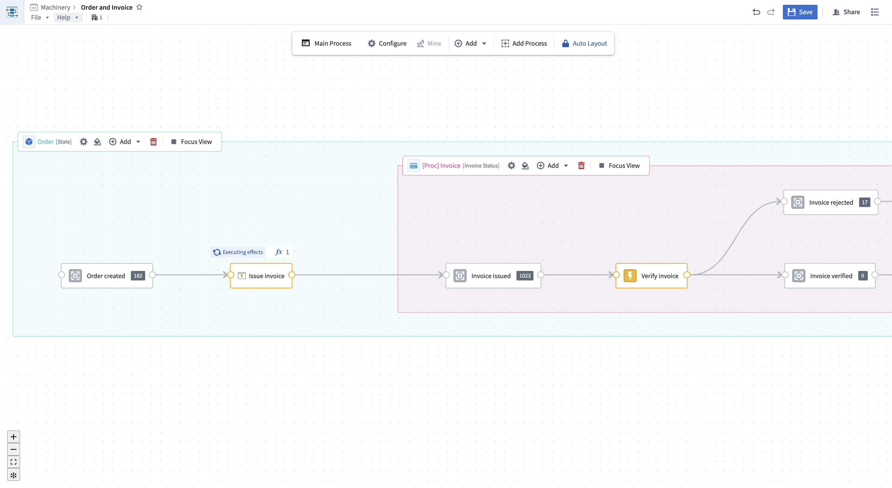

Machinery
Many real-world events can be thought of as processes, such as business workflows, government operations, or healthcare procedures. In a process, entities such as documents, equipment, or individuals undergo changes of state over time. The Machinery application enables you to understand and manage all aspects of a process, identify unwanted behavior, and make improvements toward a desired outcome. With support from AIP's LLM-powered functionality, you can use Machinery as a reliable framework for orchestrating multiple automations in multi-step AIP workflows. Supported workflows include:
- Resolving process inefficiencies with the help of AIP and automation
- Managing an AIP use case end to end by orchestrating several AI agents
- Mining an ongoing process from external event logs to gain visibility into an existing process
- Defining and monitoring performance metrics and expectations to identify process bottlenecks
- Building operational applications to supervise AIP workflows with real-time human intervention

Use cases
Example use cases and workflows for Machinery include:
- Insurance: Capture the process of insurance claims from the initial filing to the final decision, including OCR on relevant documents, semi-automated processing, and human approval.
- Hospital operations: Model the patient journey through hospital care from end to end. Support operations through medical document generation.
- Purchase-to-pay: Consider the procurement process from requisition to payment and improve workflow efficiency.
- Order-to-cash: Optimize the sales process from order receipt to payment collection for customer satisfaction and cash flow.
:::callout{theme="success" title="Palantir Learning portal"}
Get started with Machinery in the "Mining your first business process" speedrun course â at learn.palantir.com â.
:::